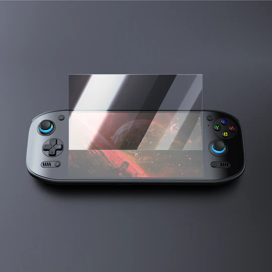

Odin2 Portal Screen Protector
Aquest protector et garanteix protecció contra les rallades i possibles trencades de la pantalla de a teva consola retro.
- Tamany: 18,4 * 11,7
- Material: Neopré
- Compatible amb: Odin2
- Preu: 5,99 €
Aquest protector et garanteix protecció contra les rallades i possibles trencades de la pantalla de a teva consola retro.